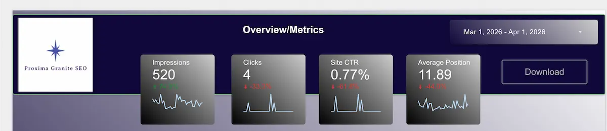
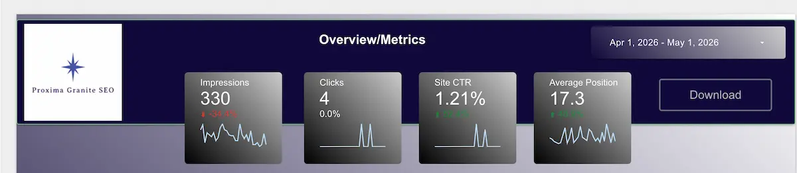

What Happens When You Remove Local SEO Signals From Your Website By Fred Fraser
How Removing Local SEO Signals Changes Website Visibility
I started an at-home business in July 2025. As of this writing, my business is not even one year old. After a lengthy unemployment, I said to myself, “why can't I do it on my own”? I always wanted to run my own business. I was so tired from the corporate grind, I hardly knew myself anymore. Then came unemployment. What do I do with my life? What did I really want to be when I grew up?
I took a course in web design. Great, I went through it twice actually and was able to build my own website and get it online. I stumbled upon a course on how to start my own SEO business from home. This sounded like a great idea. My company Proxima Granite SEO was born.
Now, who was I going to appeal to? I could not possibly target keywords such as “SEO American Company”, “American SEO Guy”, “SEO in the United States”. So I went with a local flavor. “I do SEO for small, local, New Hampshire businesses”. I would target barbershops, plumbers, electricians and such. This would yield me better search results. Plus, I was a new business and couldn't possibly target lawyers and doctors. I was a small, growing, determined little SEO agency. Kind of like the little train that could. “I think I can, I think I can, I KNOW I can!”
Within weeks, I was ranking! I was thrilled to go from zero to seen by Google, getting impressions and clicks. By beginning of April this year I was getting more than 500 impressions in a month. Though my click-through rate was low. But I was being seen! When I searched for my website, I was seeing myself in all sorts of keywords. I was outranking my competitors. It was just a matter of time before this little company that could was going to break. If you want a clearer picture of your own business website's search performance contact us today to request a free homepage review.
But something happened along the way.
I joined my local chamber of commerce and started attending the meetings. I started enjoying the food and conversation, meeting new people, talking about our businesses. I passed out cards, shook hands, gave my elevator pitch and did the best I could. This was all out of my comfort zone but I was getting it, doing better, dressing my best and looking forward to the meetings. Problem was, every time I opened up my mouth about SEO I was getting blank looks and glazed over eyes. When others talked proudly about their pest control business or barbershop, others were wide-eyed and excited. Though I became known as the “web guy”, it struck me that this was not my target audience. What was I to do?
My website was full of folksy references, “I cater to roofers and contractors in Southern New Hampshire”. I was the local SEO guy. My target audience was not responding, in person or online. I was not getting conversions. I offered “free home page review” and a ton of CTAs. I blasted all over social media. Nothing. It was time to change things up. I now started to target “SaaS, B2B, tech startups and growing organizations”. This would bring me to the promised land. I had a new niche, a target audience in which I would not have to figure out how to explain SEO to. Someone who finally appreciated my unique skills, as someone from the engineering and QA world.
While all of this is true, I didn't get the immediate result I thought I would. My impressions were actually down, though my click through rate was higher. I was experiencing repositioning confusion, local identity dilution, entity ambiguity and audience mismatch.

Search impressions were increasing targeting local small businesses

Search impressions were decreasing with my new marketing campaign.
I kept the “New Hampshire business” angle. This is because Google builds geographic association, entity trust, local relevance signals. Google also has to adapt for topical shifts and audience alignment. This can take time, perhaps months. My hybrid positioning may be stronger, as I am now “New Hampshire SEO business serving SaaS, B2B and tech startups nationally”. Some of my top queries have been around “New Hampshire SEO consultant” so I don't want to lose that local identity. Though it's hard to see myself losing visibility in this crucial pivot, I am gaining more quality impressions and a better, more solid target audience.
Interested in knowing more about SEO? Check out our real-life case studies.
Fred Fraser is the owner/operator of Proxima Granite SEO. He is an SEO strategist, consultant, working with SaaS, B2B, tech startups and growing organizations to get seen in Google and AI. Learn more about Fred and check out his LinkedIn profile.